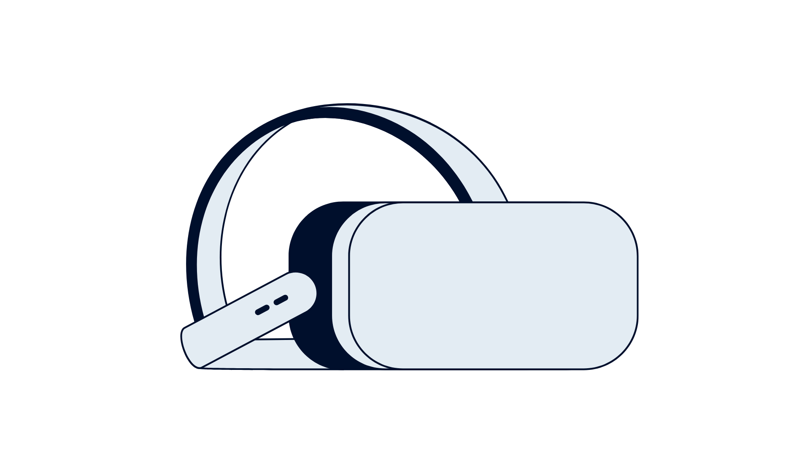
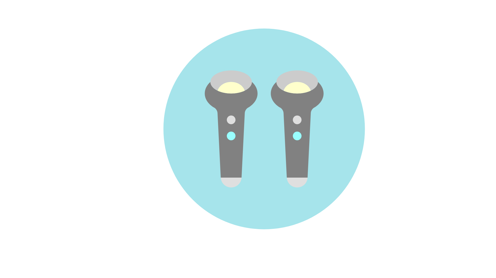

Core Social Process
It is a fundamental feature of social exchange.
University of Western Australia
Macquarie University
Interpersonal coordination is the alignment of behaviour between people during interaction, expressed through movement, speech, and physiology.

It is a fundamental feature of social exchange.
When people coordinate, they often like each other more and feel a stronger connection.
Group membership and argument influence the degree of coordination.
Mental health symptoms and neurodiversity can also shape how coordination unfolds.


Visual tracking strengthens coordination in minimally social contexts (Richardson et al., 2007; Schmidt et al., 2007).
Individuals show subtle differences in gaze and attention as a function of context.
Do patterns of social attention (via gaze and focus) govern coordination?



